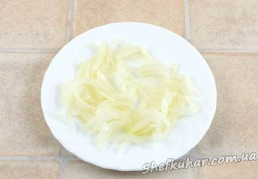
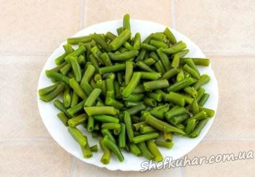
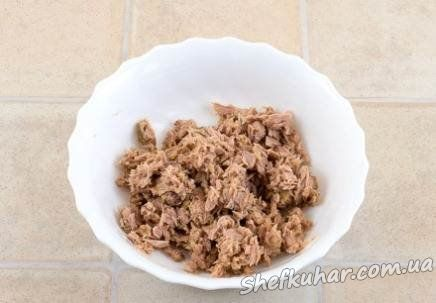
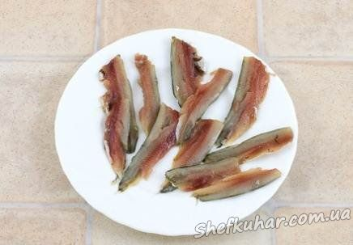
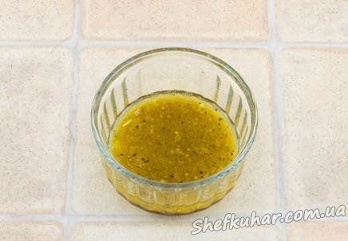
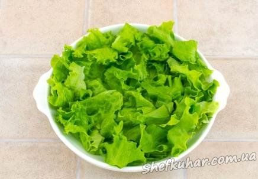

Крем-суп зі шпинатом
Інгредієнти: картопля 2 шт. морква 1 шт. цибуля ріпчаста 1 шт. перець болгарський 1 шт. шпинат (заморожений) 200 г. креветки (очищені) 150 г. сир твердий 50 г. вершки 100 мл зелень 1 пучок крутони Розраховано на 2 порції
Кулінарний рецепт крем-супу зі шпинатом.

Овочі чистимо, нарізаємо довільними шматочками, викладаємо в каструлю і заливаємо водою — приблизно півлітра.
Варимо до готовності картоплі і моркви.

Креветки очищаємо.

Розморожуємо шпинат.

При бажанні для крутонів в довільній пропорції змішуємо оливкову олію, часник, сухі трави, сіль, перець.

Батон рвемо на шматочки, змішуємо з соусом.

Обсмажуємо на сухій сковороді до золотистої скоринки.

З каструлі прибираємо перець і цибулю, решту пюруємо блендером, додавши шпинат.Солимо.

Доводимо до кипіння, знімаємо з вогню, додаємо сир, зелень, пюруємо знову, розбавляємо суп вершками, всипаємо креветки.
Подаємо з крутонами